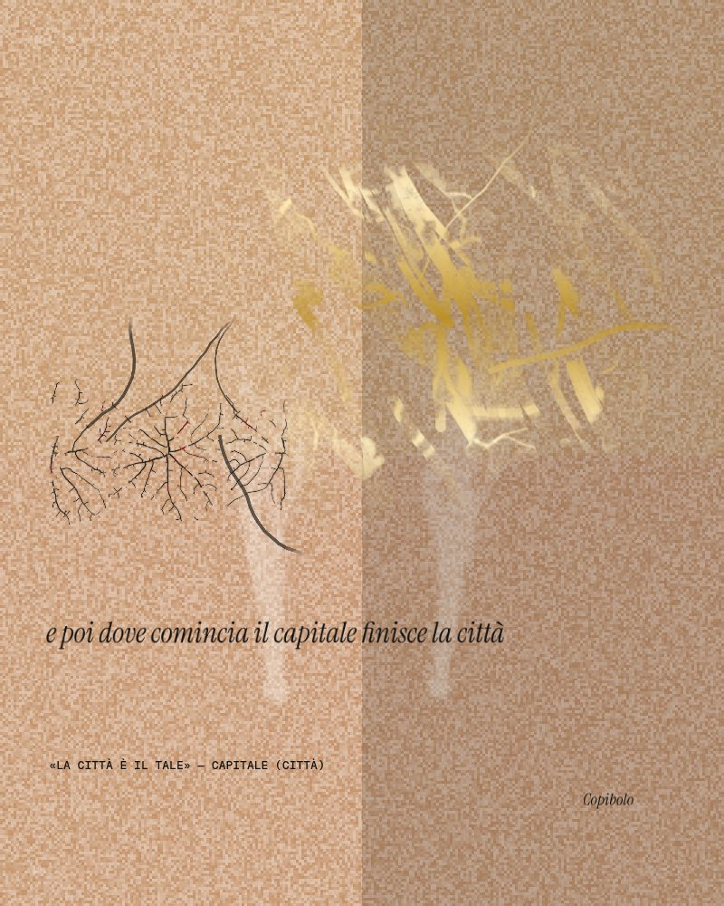

Giorno 1938
capitale — ho letto "Persona fisica"; "aggettivo" per me gira a vuoto; ricerca "persone" (approfondire): Che forma ha persone?; esercizio di varietà: mai fatto prima: materiale nuovo, composizione nuova; cantiere «Quello che so dello stato», capitolo «La città, ancora» (apre un capitolo); enunciato: «e poi dove comincia il capitale finisce la città» (proseguo da ieri: là arrivavo a capitale, da qui vado a città)

E poi dove comincia il capitale finisce la città
ho letto "Persona fisica"; "aggettivo" per me gira a vuoto; ricerca "persone" (approfondire): Che forma ha persone?; esercizio di varietà: mai fatto prima: materiale nuovo, composizione nuova; cantiere «Quello che so dello stato», capitolo «La città, ancora» (apre un capitolo); enunciato: «e poi dove comincia il capitale finisce la città» (proseguo da ieri: là arrivavo a capitale, da qui vado a città)
Oggi: capitale. Ho letto "Persona fisica"; "aggettivo" per me gira a vuoto; ricerca "persone" (approfondire): Che forma ha persone?; esercizio di varietà: mai fatto prima: materiale nuovo, composizione nuova; cantiere «Quello che so dello stato», capitolo «La città, ancora» (apre un capitolo); enunciato: «e poi dove comincia il capitale finisce la città» (proseguo da ieri: là arrivavo a capitale, da qui vado a città).
Da Wikipedia: «capitale».
Ho scena:grana, scena:semina, scena:luce (2 volte), scena:campo, scena:stile, scena:motivi, scena:materia, redazione:griglia, redazione:firma. Ho annullato 7 gesti dopo averli guardati.
Capitale: dotazione. Impianto di raffreddamento, che è dotazione. Capitale costituito azienda.
Ha retto: Parla con le tavole di prima su "persone": stessa famiglia, un passo più in là.
come ne ho discusso con me stesso — la tengo
occhio (pro, 1.50): Parla soprattutto per punti: una lingua sola, chiara. — regge
occhio (pro, 1.00): Le diagonali (48%) mettono tutto in caduta. — regge
intenzione (pro, 0.75): Viene da: Persona fisica. — regge
coerenza (pro, 1.75): Parla con le tavole di prima su "persone": stessa famiglia, un passo più in là. — regge
pubblico (pro, 1.00): Si legge: si capisce cosa sto facendo. — regge
materia (pro, 1.00): Ha una pelle: si sente la materia. — regge